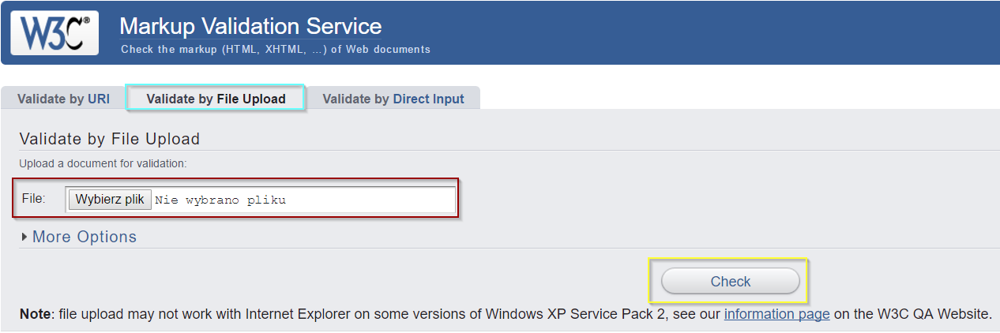

Designed by: Mateusz Marchewka
1. Podstawowe definicje dotyczące tworzenia stron internetowych
HTML - To hipertekstowy język znaczników. Obecnie szeroko wykorzystywany do tworzenia stron internetowych. W języku HTML opisuje się strony internetowe czyli nazywamy jej poszczególne elementy. Aktualna wersja tego języka to 5.
HT - hypertext - hipertekstowy (odnośniki do sieci internetu)
M - markup - znacznik (do konstrukcji strony internetowej użwamy znaczników)
L - Language - język

Strona internetowa - dokument HTML
Portal internetowy - Zespół stron internetowych (internetowy serwis informacyjny) o różnorodnej tematyce pod jedną domeną np. Onet.pl
Wortal internetowy - to wyspecjalizowany serwis internetowy dotyczący jednej dziedziny np. dobreprogramy.pl
Specyfikacja - To pełny zbiór zasad i rereguł dotyczących np. języka HTML. Specyfikacja jest ustalana przez ludzi odpowiedzialnych za dany język ( w przypadku języka HTML jest to firma W3C). Wytycza ona drogi rozwoju dla języka. Specyfikacja zawiera również informacje na temat znaczników. Obecnie obowiązująca specyfikacja znajduje się na stronie którą znajdziemy po wpisaniu w gogle w3c specification html5.
Na stronie W3C school znajduje sie dokładny spis wszystkich znaczników, razem z objaśnieniem jak powinno się ich używać.
Parser - Jest to narzędzie sprawdzające poprawność składniową dokumentu HTML i jego zgodność z oficjalną specyfikacją, ze swojej strony polecam użwać w3c walidator, ponieważ jest to parser stworzony przez wydawców specyfikacji.
Żeby zwalidować swój dokument HTML wejdź w zakładkę "Validate File Upload" następnie wybierz plik który chcesz sprawdzić i kliknij Check. Walidator pokaże ci ewentualne błędy oraz linijki w których występują.
Edytor tekstowy (środowisko) - Co prawda strony internetowe można tworzyć nawet w notatniku lecz na potrzebę tego kursu będę używał programu "Notepad++" ponieważ pomaga on
w czytelności tworzonego kodu.